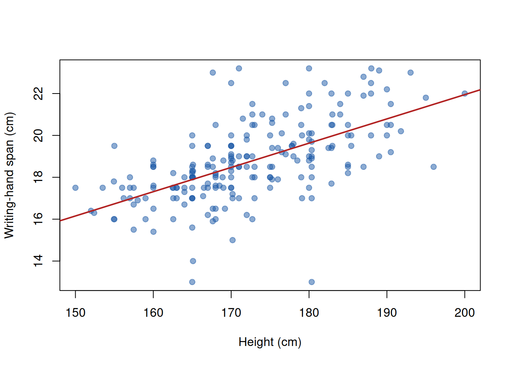
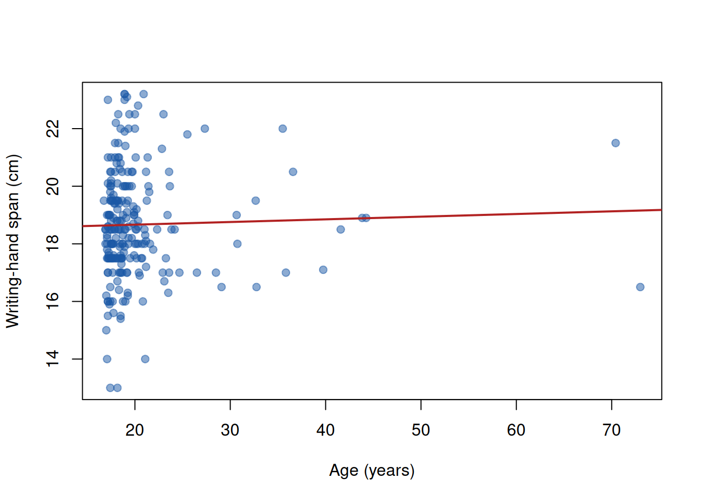
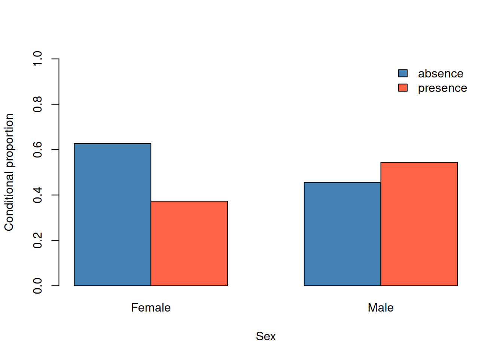

library(MASS)QSBS Practical 1b — Correlation and Association Answers
Introduction
Again, we are using data from the MASS package, so we make sure this package is loaded.
Exercise 1
Using the survey dataset, make a scatter-plot of the span of the writing hand (Wr.Hnd) versus the height (Height) of each subject. Next, calculate the Pearson, Spearman and Kendall correlation coefficients for this pair of variables. Notice to what degree the three coefficients differ and think about how we should interpret these differences. Hint: both variables contain NAs, and correlations can only be calculated on complete cases. The cor() function has a function argument to handle this.
Answer
The scatter plot shows writing-hand span (Wr.Hnd, centimetres) against height (Height, centimetres). The trend-line was not requested in the exercise but still added to make it easier to compare any deviations from the straith line.
plot(survey$Height, survey$Wr.Hnd,
xlab = "Height (cm)", ylab = "Writing-hand span (cm)",
pch = 19, col = rgb(red=0.1, green=0.35, blue=0.65, alpha=0.5))
abline(lm(Wr.Hnd ~ Height, data = survey), col = "firebrick", lwd = 2)
The thee correlation coefficients are calculating, making sure to only use complete observations (i.e. only those cases where both Wr.Hnd an Height should contain a value and not an NA). If you don’t specify this and the data contain NAs then an NA will be returned by the cor function.
correlations_ex1 <- c(
Pearson = cor(survey$Wr.Hnd, survey$Height, method = "pearson", use="complete.obs"),
Spearman = cor(survey$Wr.Hnd, survey$Height, method = "spearman", use="complete.obs"),
Kendall = cor(survey$Wr.Hnd, survey$Height, method = "kendall", use="complete.obs")
)
round(correlations_ex1, 3) Pearson Spearman Kendall
0.601 0.645 0.470 The scatter plot shows a positive correlation with some outliers, especially below the dominant trend (smaller writing-hand span than expectded). All three coefficients describe a positive association: taller respondents tend to have a larger writing-hand span. Pearson measures linear association; Spearman and Kendall measure rank-based monotonic association.
The printed values show a frequently seen pattern: the Pearson and Spearman values are relatively close whereas the Kendall value is a bit lower. It doesn’t imply that Kendall is telling you there is less association - the indices just measure something different.
You will usually get lower values for the Kendall measure than the Spearman correlation coefficient for a simple bivariate distribution. because their values are approximately related by
\[ \rho_s \approx \sin\left(\frac{\pi}{2}\tau\right). \]
Since, for \(0 < \tau < 1\),
\[ \sin\left(\frac{\pi}{2}\tau\right) > \tau, \]
Spearman’s \(\rho_s\) will generally be larger in magnitude than Kendall’s \(\tau\).
Exercise 2
Using the survey dataset, make a correlation-matrix with Pearson correlations for the variables Wr.Hnd, NW.Hnd, Pulse, Height and Age. Next, do the same for the Spearman correlation.
Answer
Pearson correlations use the original numeric values and describe linear association. pairwise.complete.obs uses all available observations for each pair, so sample sizes may differ between cells.
survey_numeric <- survey[, c("Wr.Hnd", "NW.Hnd", "Pulse", "Height", "Age")]
pearson_matrix <- cor(survey_numeric, method = "pearson",
use = "pairwise.complete.obs")
round(pearson_matrix, 3) Wr.Hnd NW.Hnd Pulse Height Age
Wr.Hnd 1.000 0.948 0.004 0.601 0.032
NW.Hnd 0.948 1.000 -0.022 0.584 0.067
Pulse 0.004 -0.022 1.000 -0.084 -0.118
Height 0.601 0.584 -0.084 1.000 -0.037
Age 0.032 0.067 -0.118 -0.037 1.000spearman_matrix <- cor(survey_numeric, method = "spearman",
use = "pairwise.complete.obs")
round(spearman_matrix, 3) Wr.Hnd NW.Hnd Pulse Height Age
Wr.Hnd 1.000 0.952 -0.033 0.645 0.088
NW.Hnd 0.952 1.000 -0.052 0.638 0.128
Pulse -0.033 -0.052 1.000 -0.110 -0.095
Height 0.645 0.638 -0.110 1.000 0.052
Age 0.088 0.128 -0.095 0.052 1.000Compare entries in the two matrices. Differences can suggest a monotonic but non-linear relationship, or sensitivity to outliers. Values close to \(1\) or \(-1\) indicate strong positive or negative association, while values close to \(0\) indicate little linear or monotonic association.
By comparing the matrices we see that the Pearson and Spearman correlations between Age and Wr.Hnd as well as Age and NW.Hnd differ relatively much. A scatter plot clarifies what is going on there.
plot(survey$Age, survey$Wr.Hnd,
xlab = "Age (years)", ylab = "Writing-hand span (cm)",
pch = 19, col = rgb(red=0.1, green=0.35, blue=0.65, alpha=0.5))
abline(lm(Wr.Hnd ~ Age, data = survey), col = "firebrick", lwd = 2)
There are two relatively old (>70) subjects in the data set. The Wr.Hnd values of these are relatively influential for the Pearson and not so much for the Spearman correlation.
Exercise 3
Using the survey dataset, calculate the Spearman and Kendall correlation coefficients between the frequency of exercise and the smoking habits. Note: to make this work, the variables Exer and Smoke have to be turned into numerical variables which reflect the ordering (for Exer from least to most frequent and for Smoke from never to heavy).
Answer
Exer and Smoke are categorical. Rank correlations require numerical vectors with explicit ordinal coding. We first check the labels that Exer and Smoke can take.
unique(survey$Exer)[1] Some None Freq
Levels: Freq None Someunique(survey$Smoke)[1] Never Regul Occas Heavy <NA>
Levels: Heavy Never Occas RegulThen we turn these factor variables into ordered factors (exercise from least to most frequent and smoking from never to heavy).
survey$Exer_ord <- factor(
survey$Exer,
levels = c("None", "Some", "Freq"),
ordered = TRUE)
survey$Smoke_ord <- factor(
survey$Smoke,
levels = c("Never", "Occas", "Regul", "Heavy"),
ordered = TRUE)Note that if you apply the function unique() to an ordered factor it does notifies you about the ordering.
unique(survey$Exer_ord)[1] Some None Freq
Levels: None < Some < Frequnique(survey$Smoke_ord) [1] Never Regul Occas Heavy <NA>
Levels: Never < Occas < Regul < HeavyNext, we turn the two ordered factor variables into numerical ones.
survey$Exer_num <- as.numeric(survey$Exer_ord)
survey$Smoke_num <- as.numeric(survey$Smoke_ord)Below, the set of relevant variables is printed in one table to illustrate how the conversion of the ordinal factors to numerical values gives different results than conversion of the original factor levels.
head( data.frame( original_Exer = survey$Exer,
original_as_num = as.numeric(survey$Exer),
ordered_as_num = as.numeric(survey$Exer_ord)),10) original_Exer original_as_num ordered_as_num
1 Some 3 2
2 None 2 1
3 None 2 1
4 None 2 1
5 Some 3 2
6 Some 3 2
7 Freq 1 3
8 Freq 1 3
9 Some 3 2
10 Some 3 2Now we calulate the two correlation coefficients on the two numerical vectors.
ex3_correlations <- c(
Spearman = cor(survey$Exer_num, survey$Smoke_num, method = "spearman", use="complete.obs"),
Kendall = cor(survey$Exer_num, survey$Smoke_num, method = "kendall",use="complete.obs")
)
round(ex3_correlations, 3)Spearman Kendall
0.090 0.084 The sign gives the direction under this coding. A positive value means that more frequent exercise tends to occur with heavier smoking categories. In this case there appears to be a very small positive association. Since category distances are not necessarily equal, keep in mind that the values should be interpreted as an ordinal association only.
Exercise 4
Using the survey dataset, create a frequency table to explore the relationship between Sex and the W.Hnd. Generate a table of proportions and interpret the conditional proportions of being left-handed for females and males, respectively.
Answer
W.Hnd is the hand used for writing. Row proportions give the conditional distribution of writing hand within each sex.
sex_hand <- with(survey, table(Sex, W.Hnd, useNA = "no"))
sex_hand W.Hnd
Sex Left Right
Female 7 110
Male 10 108sex_hand_rowprop <- prop.table(sex_hand, margin = 1)
round(sex_hand_rowprop, 3) W.Hnd
Sex Left Right
Female 0.060 0.940
Male 0.085 0.915The Left column estimates \(P(\text{left-handed} \mid \text{female})\) and \(P(\text{left-handed} \mid \text{male})\). The contingency table shows that among females, the proportion left-handed is 0.06; whereas among males it is slightly higher: 0.085. Note that comparison is descriptive for the sample that was studied; it does not on its own test for an association in the population.
Exercise 5
Using the survey dataset, generate a frequency table of the Fold variable. Use only the cases with the labels ‘L on R’ and ‘R on L’ by creating a new variable Fold2 where the cases with the label ‘Neither’ are replaced by NA. Next, create a frequency table with Sex as the column variable and the new variable Fold2 as the row variable. Generate conditional proportions of the occurrence (left on right arm-fold) and interpret.
Answer
First inspect the original three-category arm-folding variable. The recoding replaces Neither with a missing value, so that only L on R and R on L remain. Removing the empty factor level Neither is not required: if it isn’t done the, frequency table will just add a row with zeros for the category Neither whill the results are the same).
# Original three-category distribution
table(survey$Fold, useNA = "no")
L on R Neither R on L
99 18 120 idx <- survey$Fold=="Neither"
survey$Fold2 <- survey$Fold
survey$Fold2[idx] <- NA
survey$Fold2 <- factor(survey$Fold2) # removes empy factor-levels
# two-category distribution
table(survey$Fold2, useNA = "no")
L on R R on L
99 120 Sex is the column variable, hence the column proportions are conditional on sex.
fold_sex <- table(survey$Fold2, survey$Sex, useNA = "no")
fold_sex
Female Male
L on R 48 50
R on L 64 56fold_sex_colprop <- prop.table(fold_sex, margin = 2)
round(fold_sex_colprop, 3)
Female Male
L on R 0.429 0.472
R on L 0.571 0.528For females: L on R = 0.429 and R on L = 0.571; for males: L on R = 0.472 and R on L = 0.528. So there is a slight difference in arm folding between females and males. Keep in mind that the omitted Neither cases are excluded from the denominator. Thus, for example, the female L on R column proportion is the observed probability of L on R among females who did not select Neither.
Exercise 6
Using the frequency table calculated in the previous exercise, evaluate the relationship between gender and arm-folding pattern with a chi-square test and formulate your conclusion about the relationship in a sentence.
Answer
The chi-squared test tests the null hypothesis that sex and the two-category arm-folding pattern are independent. This null hypothesis is not rejeced (based on the p-value of 0.6).
chi_fold <- chisq.test(fold_sex)
chi_fold
Pearson's Chi-squared test with Yates' continuity correction
data: fold_sex
X-squared = 0.25359, df = 1, p-value = 0.6146The expected-count table should be checked: the usual chi-squared approximation is most reliable when expected cell counts are not small (a common guideline is at least \(5\) in every cell).
chi_fold$expected
Female Male
L on R 50.34862 47.65138
R on L 61.65138 58.34862In this case the expected cell counts are sufficiently large and we can trust the oucome.
Exercise 7
Using the Melanoma dataset, generate a frequency table to explore the relationship between sex and ulcer. It will be easier to interpret and use the table if (for both variables) the categories are first renamed from 0 and 1 to the labels used in the code-book (see ?Melanoma). If you don’t know how to do this, you can use the code below.
Code
Melanoma$sex_f <- factor(Melanoma$sex, levels = c(0, 1),
labels = c("Female", "Male"))
Melanoma$ulcer_f <- factor(Melanoma$ulcer, levels=c(0,1),
labels=c("absence","presence"))Create a barplot of the conditional proportions.
Answer
In Melanoma, sex is coded \(0\) for female and \(1\) for male. The code below labels both sex and ulcer status. Row proportions are conditional on sex.
Melanoma$sex_f <- factor(Melanoma$sex, levels = c(0, 1),
labels = c("Female", "Male"))
Melanoma$ulcer_f <- factor(Melanoma$ulcer, levels = c(0, 1),
labels = c("absence", "presence"))
sex_ulcer <- table(Melanoma$sex_f, Melanoma$ulcer_f, useNA = "no")
sex_ulcer
absence presence
Female 79 47
Male 36 43sex_ulcer_rowprop <- prop.table(sex_ulcer, margin = 1)
round(sex_ulcer_rowprop, 3)
absence presence
Female 0.627 0.373
Male 0.456 0.544barplot(t(sex_ulcer_rowprop), beside = TRUE, ylim = c(0, 1),
col = c("steelblue", "tomato"),
ylab = "Conditional proportion", xlab = "Sex",
legend.text = c("absence", "presence"),
args.legend = list(x = "topright", bty = "n"))
The presence bar for each sex is the observed conditional proportion with ulceration in that sex group.
Exercise 8
Using the Melanoma dataset, explore the relationship between sex and survival status. First recode status to a two-category (dead/alive) variable and label its categories appropriately (see ?Melanoma).
If you don’t know how to do this, you can use the code below.
Code
status_binary <- Melanoma$status
idx <- status_binary == 1 | status_binary == 3
status_binary[idx] <- 1
Melanoma$status_f <- factor(status_binary,
levels = c(1, 2),
labels = c("dead", "alive"))Next, generate a table of conditional proportions of dying (the occurrence of interest) for female and male patients, respectively Apply a chi-square to test this relationship at the 5% significance level and formulate your conclusion.
Answer
Originally, status = 1 means death from melanoma, status = 2 means alive, and status = 3 means death from other causes. The recoding changes every \(3\) to \(1\) and leaves the other values unchanged. Therefore, both kinds of death are combined into dead.
Application of the functions table() and prop.table() provides information on the conditional probabilities of dying (make sure you understand the argument ‘margin=1’).
status_binary <- Melanoma$status
idx <- status_binary == 1 | status_binary == 3
status_binary[idx] <- 1
Melanoma$status_f <- factor(status_binary,
levels = c(1, 2),
labels = c("dead", "alive"))
sex_status <- table(Melanoma$sex_f, Melanoma$status_f, useNA = "no")
sex_status
dead alive
Female 35 91
Male 36 43sex_status_rowprop <- prop.table(sex_status, margin = 1)
round(sex_status_rowprop, 3)
dead alive
Female 0.278 0.722
Male 0.456 0.544chi_status <- chisq.test(sex_status)
chi_status
Pearson's Chi-squared test with Yates' continuity correction
data: sex_status
X-squared = 6.0262, df = 1, p-value = 0.01409chi_status$expected
dead alive
Female 43.63902 82.36098
Male 27.36098 51.63902The null hypothesis of independence between sex and survival is rejected at the 5% level of significance: Females have a much higher probability for survival. Note that the chi-square test assesses whether the observed difference provides evidence against independence; it does not establish a causal effect of sex.